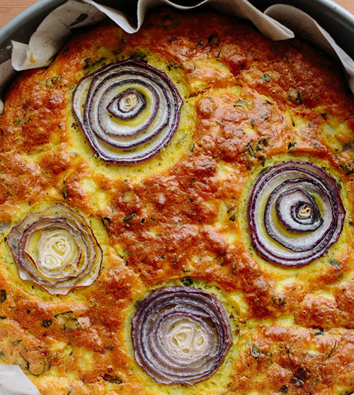

Serves 4 to 6
Preheat the oven to 400°F.
Place the cauliflower florets in a saucepan and add 1 teaspoon salt. Cover with water and simmer for 15 minutes, until the florets are quite soft. They should break when pressed with a spoon. Drain and set aside in a colander to dry.
Cut 4 round slices, each 1/4-inch/5-mm thick, off one end of the onion and set aside. Coarsely chop the rest of the onion and place in a small pan with the oil and rosemary. Cook for 10 minutes over medium heat, stirring from time to time, until soft. Remove from the heat and set aside to cool. Transfer the onion to a large bowl, add the eggs and basil, whisk well, and then add the flour, baking powder, turmeric, Parmesan, 1 teaspoon salt, and plenty of pepper. Whisk until smooth before adding the cauliflower and stirring gently, trying not to break up the florets.
Line the base and sides of a 9 1/2-inch/24-cm springform cake pan with parchment paper. Brush the sides with melted butter, then mix together the sesame and nigella seeds and toss them around the inside of the pan so that they stick to the sides. Pour the cauliflower mixture into the pan, spreading it evenly, and arrange the reserved onion rings on top. Place in the center of the oven and bake for 45 minutes, until golden brown and set; a knife inserted into the center of the cake should come out clean. Remove from the oven and leave for at least 20 minutes before serving. It needs to be served just warm, rather than hot, or at room temperature.